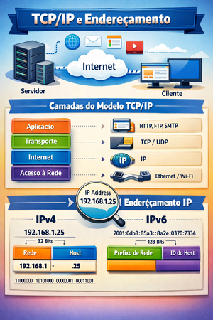
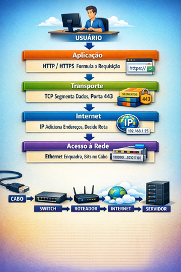

Infraestrutura Física de Redes
AULA 04 — TCP/IP, Endereçamento IP e Máscaras de Rede

1. Do OSI ao TCP/IP — Por que o TCP/IP Venceu
O Modelo OSI, estudado na aula anterior, é um modelo de referência teórico — foi criado para descrever como a comunicação em rede deveria ser organizada. Ele não foi projetado para ser implementado diretamente.
O TCP/IP seguiu o caminho oposto: nasceu como implementação prática, antes mesmo de qualquer modelo formal existir. Foi desenvolvido pelo DARPA nos anos 1970, adotado pela ARPANET em 1983 e tornou-se o protocolo universal da internet. Enquanto o OSI ainda era debatido em comitês, o TCP/IP já estava funcionando em redes reais ao redor do mundo.
O resultado é que hoje vivemos num mundo TCP/IP. Todo dispositivo conectado à internet — computador, smartphone, smart TV, câmera IP, impressora de rede — usa TCP/IP para se comunicar. O OSI permanece como ferramenta conceitual e de diagnóstico; o TCP/IP é a implementação real.
A comparação entre os dois modelos:
| Modelo OSI | Modelo TCP/IP |
|---|---|
| 7 — Aplicação | Aplicação |
| 6 — Apresentação | Aplicação |
| 5 — Sessão | Aplicação |
| 4 — Transporte | Transporte |
| 3 — Rede | Internet |
| 2 — Enlace de Dados | Acesso à Rede |
| 1 — Física | Acesso à Rede |
O TCP/IP condensa as 7 camadas do OSI em 4. As três camadas superiores do OSI (aplicação, apresentação e sessão) são tratadas como uma única camada de aplicação. As duas camadas inferiores (enlace e física) são agrupadas na camada de acesso à rede.
Por que um modelo de 4 camadas é suficiente na prática?
Na implementação real, as distinções entre sessão, apresentação e aplicação raramente precisam ser separadas — a maioria dos protocolos de aplicação lida com essas três responsabilidades ao mesmo tempo. Da mesma forma, enlace e física são tão interdependentes no hardware que tratá-los separadamente adiciona complexidade sem benefício prático.
O TCP/IP é pragmático: define o mínimo necessário para que a comunicação funcione em escala global.
2. As Quatro Camadas do Modelo TCP/IP
Camada de Acesso à Rede
Corresponde às camadas 1 (Física) e 2 (Enlace) do OSI. É responsável pela transmissão dos dados no meio físico — cabos, sinais elétricos, ondas de rádio — e pela comunicação entre dispositivos diretamente conectados na mesma rede local.
Tecnologias que vivem aqui: Ethernet, Wi-Fi, cabos de par trançado, fibra óptica, conectores RJ-45, switches.
Esta é a camada que este curso trata com mais profundidade — todo o cabeamento estruturado, crimpagem e organização de infraestrutura acontece aqui.
Camada de Internet
Corresponde à camada 3 (Rede) do OSI. É o coração do TCP/IP — onde vive o protocolo IP (Internet Protocol), responsável pelo endereçamento e roteamento de pacotes entre redes diferentes.
É nesta camada que cada dispositivo recebe um endereço IP — sua identidade lógica na rede — e onde os roteadores tomam decisões sobre para onde encaminhar cada pacote.
Outros protocolos desta camada: ICMP (usado pelo comando ping para testar conectividade), ARP (resolve endereços IP em endereços MAC — será detalhado na aula 05).
Camada de Transporte
Corresponde à camada 4 do OSI. Gerencia a comunicação fim a fim entre aplicações, usando portas para identificar qual processo deve receber cada dado.
Dois protocolos principais:
TCP (Transmission Control Protocol) — confiável, orientado à conexão, garante entrega e ordem. Usado onde a integridade dos dados é crítica: navegação web, e-mail, transferência de arquivos.
UDP (User Datagram Protocol) — rápido, sem conexão, sem garantia de entrega. Usado onde a velocidade é mais importante que a perfeição: streaming, jogos online, VoIP, DNS.
Camada de Aplicação
Corresponde às camadas 5, 6 e 7 do OSI. Define os protocolos que as aplicações usam para se comunicar pela rede.
Exemplos: HTTP/HTTPS (web), SMTP/IMAP (e-mail), FTP (arquivos), DNS (nomes), DHCP (endereçamento automático), SSH (acesso remoto).
3. O que é um Endereço IP
O endereço IP (Internet Protocol Address) é o endereço lógico que identifica um dispositivo numa rede TCP/IP. É lógico porque não está gravado no hardware — é configurado por software e pode mudar.
IPv4 — A versão dominante
O IPv4 usa endereços de 32 bits, divididos em 4 grupos de 8 bits cada (octetos), representados em notação decimal separada por pontos:
| Endereço IP | Representação |
|---|---|
| 11000000.10101000.00000001.00000001 | (binário) |
| 192.168.1.1 | (decimal) |
Cada octeto pode variar de 0 a 255, resultando em endereços no formato 0.0.0.0 a 255.255.255.255.
Os dois componentes de um endereço IP
Todo endereço IPv4 é composto por duas partes:
Parte de rede (network): identifica a rede à qual o dispositivo pertence. Todos os dispositivos da mesma rede compartilham a mesma parte de rede.
Parte de host: identifica o dispositivo específico dentro daquela rede. Deve ser único dentro da rede.
Analogia: o endereço IP funciona como um endereço postal. A parte de rede é como o nome da rua — todos os moradores da mesma rua compartilham. A parte de host é como o número da casa — único dentro da rua.
IP Público vs. IP Privado
IP público: endereço único no mundo inteiro, roteável na internet. É atribuído pela operadora de internet. É o "endereço da sua rua no mapa mundial".
IP privado: endereço usado internamente numa rede local, não roteável diretamente na internet. Vários dispositivos em redes diferentes podem ter o mesmo IP privado sem conflito. Os ranges reservados para uso privado são:
| Faixa | Classe | Uso típico |
|---|---|---|
| 10.0.0.0 — 10.255.255.255 | A | Redes corporativas grandes |
| 172.16.0.0 — 172.31.255.255 | B | Redes corporativas médias |
| 192.168.0.0 — 192.168.255.255 | C | Redes domésticas e pequenas empresas |
O roteador faz a tradução entre o IP privado interno e o IP público da operadora — processo chamado NAT (Network Address Translation).
IPv6 — O futuro já presente
O IPv4 suporta no máximo 4,3 bilhões de endereços — número insuficiente para o volume de dispositivos conectados hoje. O IPv6 usa endereços de 128 bits, representados em hexadecimal:
2001:0db8:85a3:0000:0000:8a2e:0370:7334 O IPv6 suporta 340 undecilhões de endereços — praticamente inesgotável. A transição do IPv4 para IPv6 está em andamento, mas o IPv4 ainda domina a maioria das redes locais. Neste curso o foco permanece no IPv4.
4. Classes de Endereços IPv4
Antes da adoção do CIDR (que veremos a seguir), os endereços IPv4 eram organizados em classes, definidas pelo valor do primeiro octeto. As classes determinam quantos bits pertencem à parte de rede e quantos pertencem à parte de host.
Classe A
- Faixa: 1.0.0.0 a 126.255.255.255
- Primeiro bit: sempre 0
- Parte de rede: 8 bits (primeiro octeto)
- Parte de host: 24 bits (três últimos octetos)
- Hosts por rede: até 16.777.214
- Uso típico: redes muito grandes — grandes corporações, provedores de internet
- Exemplo: 10.0.0.1 (rede 10, host 0.0.1)
Classe B
- Faixa: 128.0.0.0 a 191.255.255.255
- Primeiros dois bits: sempre 10
- Parte de rede: 16 bits (dois primeiros octetos)
- Parte de host: 16 bits (dois últimos octetos)
- Hosts por rede: até 65.534
- Uso típico: redes médias — universidades, empresas de médio porte
- Exemplo: 172.16.5.10 (rede 172.16, host 5.10)
Classe C
- Faixa: 192.0.0.0 a 223.255.255.255
- Primeiros três bits: sempre 110
- Parte de rede: 24 bits (três primeiros octetos)
- Parte de host: 8 bits (último octeto)
- Hosts por rede: até 254
- Uso típico: redes pequenas — escritórios, residências, laboratórios
- Exemplo: 192.168.1.10 (rede 192.168.1, host 10)
Esta é a classe mais comum em redes locais. Quando você vê um endereço 192.168.x.x, está diante de uma rede Classe C privada.
Classe D
- Faixa: 224.0.0.0 a 239.255.255.255
- Uso: multicast — envio simultâneo para um grupo de dispositivos
- Não é usada para endereçamento de hosts individuais
Classe E
- Faixa: 240.0.0.0 a 255.255.255.255
- Uso: reservada para pesquisa e uso experimental
- Não é usada em redes de produção
Endereços especiais
| Endereço | Finalidade |
|---|---|
| 127.0.0.1 | Loopback — o dispositivo se comunica consigo mesmo. Usado para testar a pilha TCP/IP local. |
| 169.254.0.0/16 | APIPA (Automatic Private IP Addressing) — atribuído automaticamente quando o dispositivo não consegue obter um IP do DHCP. Indica problema de configuração. |
| 255.255.255.255 | Broadcast limitado — enviado para todos os dispositivos da rede local. |
| x.x.x.0 | Endereço de rede — identifica a rede, não pode ser atribuído a um host. |
| x.x.x.255 | Broadcast dirigido — enviado para todos os hosts daquela rede específica. |
5. Máscara de Rede
A máscara de rede (subnet mask) é o mecanismo que define onde termina a parte de rede e onde começa a parte de host num endereço IP.
Sem a máscara, um endereço IP sozinho é ambíguo — não é possível saber quantos bits pertencem à rede e quantos pertencem ao host.
Como a máscara funciona
A máscara de rede também tem 32 bits. Ela é composta por uma sequência de bits 1 (representando a parte de rede) seguida de uma sequência de bits 0 (representando a parte de host). Os bits 1 e 0 nunca se alternam — é sempre todos os 1s primeiro, depois todos os 0s.
| Endereço IP | 192.168.1.10 | 11000000.10101000.00000001.00001010 | |
| Máscara de rede | 255.255.255.0 | 11111111.11111111.11111111.00000000 | |
| |_____ rede (24 bits) _____|host| | |||
Fazendo a operação AND bit a bit entre o IP e a máscara, obtemos o endereço de rede:
192.168.1.10 AND 255.255.255.0 = 192.168.1.0 (endereço da rede)
Notação decimal e notação CIDR
A máscara pode ser representada de duas formas:
Notação decimal: escreve os quatro octetos por extenso — 255.255.255.0
Notação CIDR (Classless Inter-Domain Routing): escreve apenas o número de bits 1 da máscara, precedido de barra — /24
As duas notações são equivalentes:
| Notação decimal | Notação CIDR | Bits de rede | Bits de host |
|---|---|---|---|
| 255.0.0.0 | /8 | 8 | 24 |
| 255.255.0.0 | /16 | 16 | 16 |
| 255.255.255.0 | /24 | 24 | 8 |
| 255.255.255.128 | /25 | 25 | 7 |
| 255.255.255.192 | /26 | 26 | 6 |
Quantos hosts cabem numa rede?
O número de hosts utilizáveis numa rede é calculado pela fórmula:
Hosts = 2ⁿ - 2
Onde n é o número de bits de host. Subtrai-se 2 porque o primeiro endereço (todos os bits de host = 0) é o endereço de rede, e o último (todos os bits de host = 1) é o endereço de broadcast — nenhum dos dois pode ser atribuído a um dispositivo.
Exemplos práticos:
| Máscara | CIDR | Bits de host | Hosts utilizáveis |
|---|---|---|---|
| 255.0.0.0 | /8 | 24 | 16.777.214 |
| 255.255.0.0 | /16 | 16 | 65.534 |
| 255.255.255.0 | /24 | 8 | 254 |
| 255.255.255.128 | /25 | 7 | 126 |
| 255.255.255.192 | /26 | 6 | 62 |
Exemplo completo com rede /24:
| Finalidade | Exemplo |
|---|---|
| Endereço de rede | 192.168.1.0 |
| Máscara | 255.255.255.0 (/24) |
| Primeiro host | 192.168.1.1 |
| Último host | 192.168.1.254 |
| Broadcast | 192.168.1.255 |
| Total de hosts | 254 |
Esta é a configuração mais comum em redes locais de pequenas empresas e residências — e será a que você encontrará com mais frequência ao longo deste curso.
6. Gateway Padrão — A Tríade do Endereçamento
Para que um dispositivo funcione corretamente numa rede TCP/IP, ele precisa de três informações fundamentais — a tríade do endereçamento:
Endereço IP: a identidade do dispositivo na rede. Deve ser único dentro da rede local.
Máscara de rede: define os limites da rede local — quais endereços estão na mesma rede e quais estão fora dela.
Gateway padrão: o endereço IP do roteador — o "portão de saída" para outras redes. Quando um dispositivo precisa se comunicar com um endereço que está fora da sua rede local, ele envia o pacote para o gateway, que decide como encaminhá-lo.
Analogia: imagine que você mora num condomínio. O endereço IP é o número do seu apartamento. A máscara de rede define os limites do condomínio — quem mora aqui e quem é de fora. O gateway é o porteiro — para qualquer coisa que precisa sair ou entrar do condomínio, passa por ele.
Como os três elementos trabalham juntos:
Quando o dispositivo A (192.168.1.10/24) quer se comunicar com o dispositivo B:
- O dispositivo A compara o IP de destino com sua máscara
- Se o destino está na mesma rede (ex: 192.168.1.50) → comunica diretamente, usando ARP para descobrir o MAC de destino
- Se o destino está em outra rede (ex: 8.8.8.8) → envia o pacote para o gateway padrão (ex: 192.168.1.1), que se encarrega do roteamento
Sem gateway configurado, o dispositivo consegue se comunicar apenas dentro da própria rede local — não acessa a internet nem outras redes.
Configuração típica de uma estação de trabalho em rede local:
| Finalidade | Exemplo |
|---|---|
| Endereço IP | 192.168.1.10 |
| Máscara de rede | 255.255.255.0 |
| Gateway padrão | 192.168.1.1 |
| DNS | 192.168.1.1 (ou 8.8.8.8) |
7. Como a Pilha TCP/IP Funciona na Prática
Para consolidar tudo que foi estudado nesta aula, vamos acompanhar o caminho completo de uma requisição — desde o momento em que o usuário digita um endereço no navegador até o bit chegar ao cabo.
Cenário: usuário digita https://www.google.com no navegador.
Passo 1 — Camada de Aplicação
O navegador identifica que precisa acessar www.google.com via HTTPS (porta 443). Antes disso, precisa saber o endereço IP de www.google.com — para isso consulta o DNS (que será detalhado na aula 05). O DNS retorna, por exemplo, 142.250.79.100. O navegador formula a requisição HTTP.
Passo 2 — Camada de Transporte
O TCP divide a requisição em segmentos. Antes de enviar os dados, realiza o handshake de três vias com o servidor:
- Cliente envia SYN (quero me conectar)
- Servidor responde SYN-ACK (aceito, pode vir)
- Cliente confirma ACK (entendido, vou começar)
Cada segmento recebe o número da porta de destino (443) e da porta de origem (uma porta aleatória acima de 1024, escolhida pelo sistema operacional).
Passo 3 — Camada de Internet
O IP encapsula cada segmento num pacote, adicionando o endereço IP de origem (192.168.1.10) e o IP de destino (142.250.79.100). O dispositivo verifica: 142.250.79.100 está fora da minha rede local — o pacote é enviado para o gateway padrão (192.168.1.1).
Passo 4 — Camada de Acesso à Rede
O pacote é encapsulado num quadro Ethernet. O endereço MAC de destino do quadro é o MAC do gateway (descoberto via ARP). O quadro é convertido em bits e transmitido pelo cabo de par trançado conectado à placa de rede.
O caminho inverso no servidor
O servidor recebe os bits pelo cabo, reconstrói o quadro (camada de acesso à rede), extrai o pacote IP (camada de internet), extrai o segmento TCP (camada de transporte), entrega a requisição HTTP ao servidor web (camada de aplicação) — que processa e devolve a resposta pelo mesmo caminho.
Visão consolidada:

Cada camada que você conheceu nesta aula e na aula anterior tem um papel preciso nesse processo. E a qualidade de tudo isso começa pelo cabo — a camada de acesso à rede — que é o objeto central deste curso.